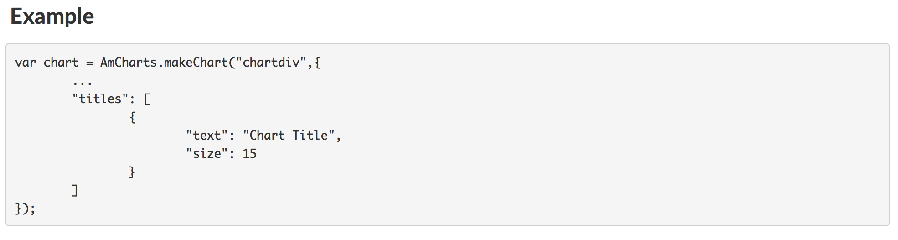

Get inspired by the JS format !
Currently, the package covers most of features found in amcharts and amstockcharts. The few examples given in this page will help you to convert the JS code. It isn’t question of presenting you the richness of the library but just for introducing you the main principles to use the official documentation.
Exemple with a pie chart
JS code:
amcharts = {
type: "pie",
valueField: "gdp",
titleField: "country",
legend: {
position: "bottom",
useMarkerColorForLabels: true
}
dataProvider: [
{country: "China", gdp: 18.976},
{country: "United States", gdp: 18.125},
...
],
}Result:
As you can see in the above example, an amcharts is defined as an object with different properties (which can be other object or array of objects). That works the same way in our package. For most of the existing objects in the JS library we have defined an S4 class that you can instantiate with a specific constructor. For instance if we want to declare an empty amcharts, use:
amChart() %>>% print()## ~ AmChart object (with detail)~
##
## Referenced properties:
##
##
## - Detail:
## list()This creates en empty object, ready to get its different properties ! Also let’s notice that the different properties will appear in a list. That is a developpement choice for conveniency with the package ‘htmlwidgets’, but do not worry, for basic use you should never have to create the list by yourself.
Now let’s keep creating the chart.
How to set the properties (other than dataProvider) ?
For setting the chart properties, you have two choices:
Either it is a simple property (not an object), in this case you can add the property directly in the constructor -best practice- or use a dedicated setter method if exists.
Or it is a complex property (object), in this case use a dedicated setter method:
A setter method is an R function with the syntax setXX() which has several parameters. The first parameter generally called ‘.Object’ is the object to which you want to set a property (it can be a chart, a legend, a graph…). The other parameter are the named properties.
Illustration for a simple property:
amChart(theme = "light")
# strictly equivalent to
amChart() %>>% setTheme(theme = "light")Important notice: every amchart has a property called ‘type’. We recommend to set it directly by using the specific constructor as follows:
amChart() %>>% setType(type = "pie")
# strictly equivalent to
amPieChart() %>>% print()## ~ AmChart object (with detail)~
##
## Referenced properties:
## type
##
## - Detail:
## $type
## [1] "pie"Illustration for a complex property :
amChart() %>>% setLegend(position = "bottom", useMarkerColorForLabels = TRUE) %>>% print()## ~ AmChart object (with detail)~
##
## Referenced properties:
## legend
##
## - Detail:
## $legend
## $legend$position
## [1] "bottom"
##
## $legend$useMarkerColorForLabels
## [1] TRUENotice: as in the latter example, if you want to share settings for several amcharts you can also instantiate an object then set it to your charts in the constructors:
legend_obj <- legend(position = "bottom", useMarkerColorForLabels = TRUE)
amchart1 <- amChart(legend = legend_obj)
amchart2 <- amChart(legend = legend_obj)How to set the dataProvider ?
The property ‘dataProvider’ contains all the data to be drawn. Naturally, we have chosen that it would more convenient to pass a data.frame.
The most important thing to remember is that columns of the data.frame must correspond to properties of the dataProvider. The conversion into JS array of object is done transparently by the package.
For instance we have this:
head(x = data_gdp, n = 2)## country gdp
## 1: China 18.976
## 2: United States 18.125Which is converted by line into array of objects:
[
{country: "China", gdp: 18.976},
{country: "United States", gdp: 18.125}
]To set the dataProvider you can either use the setter method or use the named parameter in the constructor:
amPieChart(dataProvider = data_gdp)
# equivalent to:
amPieChart() %>>% setDataProvider(dataProvider = data_gdp) Thus why we can refer to columns in the chart definition:
amPieChart(valueField = 'gdp', titleField = 'country', dataProvider = data_gdp)Let’s remember the key things:
- Choose the chart type:
amPieChart(...)- Give as many paramater as it’s possible in the constructor:
amPieChart(valueField = 'gdp', titleField = 'country',
theme = "light", dataProvider = data_gdp)- Tune the chart with other features by using the setters:
pipeR::pipeline(
amPieChart(valueField = 'gdp', titleField = 'country',
theme = "light", dataProvider = data_gdp),
setLegend(position = "bottom", useMarkerColorForLabels = TRUE)
)- Get the result in the viewer !
How to set an array ?
The setters can have different forms depending on the nature of the JS object. Basically, for all properties which are JS array you will find the two kinds of setter setXX and addXX. Let’s take a example with two series displayed on the same chart:
The associated JS code looks like this:
amcharts = {
type: "serial",
categoryField: "Period",
graphs: [
{valueField: "AirPassengers", title; "First serie"},
{valueField: "AirPassengers2", title; "Second serie"}
]
dataProvider: [
{AirPassengers: 112, AirPassengers: 28.00, Period: "01/1949", ...},
{AirPassengers: 118, AirPassengers: 29.50, Period: "02/1949", ...},
...
],
}We see that the property “graph” is an array of JS objects. To set this array we have two choices :
- Create a list of object “amGraph” and use the setter
setGraphs
graphs_ls <- list(graph(valueField = "AirPassengers", title = "First serie"),
graph(valueField = "AirPassengers2", title = "First serie"))
amSerialChart(dataProvider = data_AirPassengers, categoryField = 'Period', graphs = graphs_ls)- Add the graphs one by one with the setter
addGraph
amSerialChart(dataProvider = data_AirPassengers, categoryField = 'Period') %>>%
addGraph(valueField = "AirPassengers", title = "First serie") %>>%
addGraph(valueField = "AirPassengers2", title = "First serie")If you don’t plan to reuse the graph we recommend the second option to save memory space.
How to customize a chart ?
Now, you should be able to add any properties to your chart, let’s try with a simple use cases
First example
Let’s assume you want the same chart as above, but you would like to change the credits postion “JS chart by amCharts”.
- First of all, your reflex is to look for documentation about serial charts:
api("AmSerialChart")This function will redirect you to the online API at “https://docs.amcharts.com/3/javascriptstockchart/AmSerialChart”
Find a property corresponding to what you want to do:
Finally set the property to chart:
amSerialChart(dataProvider = data_AirPassengers, categoryField = 'Period',
creditsPosition = "top-right") %>>%
addGraph(valueField = "AirPassengers", title = "First serie") %>>%
addGraph(valueField = "AirPassengers2", title = "First serie") %>>%
plot()Important: We don’t control the validity of the properties you set, as a consequence if you set a wrong property, your chart could have either a wrong behavior or the same behavior (if the property has no effect) !
Second example:
Now, let’s assume that you still want the same chart but you want to add a title and a subtitle.
- Look for documentation about serial charts:
api("AmSerialChart")Find a property corresponding to what you want to do:
Find more information about a “Title” object, click on the link (or run
api("Title")): Set the property to your chart:
amSerialChart(dataProvider = data_AirPassengers, categoryField = 'Period',
creditsPosition = "top-right") %>>%
addGraph(valueField = "AirPassengers", title = "First serie") %>>%
addGraph(valueField = "AirPassengers2", title = "First serie") %>>%
# we use the setter 'add' since the property titles is an array of 'Title' objects"
addTitle(text = "Title") %>>%
addTitle(text = "Subtitle", size = 10) %>>%
plot()Notice:
For a reusable title we also would have run:
title_shared <- title(text = "Title")
subtitle_shared <- title(text = "Subtitle", size = 10)
amSerialChart(dataProvider = data_AirPassengers, categoryField = 'Period',
creditsPosition = "top-right") %>>%
addGraph(valueField = "AirPassengers", title = "First serie") %>>%
addGraph(valueField = "AirPassengers2", title = "First serie") %>>%
# we use the setter 'add' since the property titles is an array of 'Title' objects"
addTitle(title = title_shared) %>>%
addTitle(title = subtitle_shared) %>>%
plot()or:
title_shared <- title(text = "Title")
subtitle_shared <- title(text = "Subtitle", size = 10)
titles_ls <- list(title_shared, subtitle_shared)
amSerialChart(dataProvider = data_AirPassengers, categoryField = 'Period',
creditsPosition = "top-right", titles = titles_ls) %>>%
addGraph(valueField = "AirPassengers", title = "First serie") %>>%
addGraph(valueField = "AirPassengers2", title = "First serie") %>>%
plot()